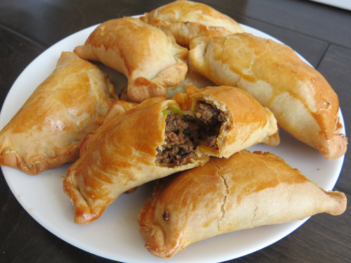

Emapnadas

Description
Indulge in the delight of our savory emapnadas, featuring
a golden brown crust and a symphony of flavors. These
hand-crimped treats are perfect as a snack, appetizer,
or a quick meal.
Ingredients
- 1/2 pound Ground Beef
- Taco Seasoning
- Cheese of your choice
- Pie Crust Dough
- 1 egg
Instructions
- Cook your Ground Beef
- Add taco seasoning to Ground Beef
- Let Ground Beef cool
- Preheat oven to 400 degrees farenheit
- Take Pie Crust Dough and roll it out
- Cut into circles (size is your choice)
- Place beef and cheese onto dough circles
- Close the beef and cheese inside the dough
- Use a fork to press the dough together
- Coat top of empanadas with egg
- Place emapnadas in oven for 15-20 minutes or until golden-brown